Distinguish futures contract operation and its limits
Lesson outline
- 02IntroductionSee the main question, learning objectives and prerequisites.
- 03Key definitions and conceptsGet familiar with the important terms and notation.
- 04Spot, forward and futures contractsHow can a trader agree today on an exchange that will occur later, and what makes that agreement reliable?
- 05Problem 1: offsetting contractsJohn buys ten June Nasdaq 100 futures contracts on 9 January and wants to close them on 16 April.
- 06Course organizationThe supplied 2026/2027 handbook and SIS export identify this course as JEM035, worth 6 ECTS, with English instruction.
- 07Connect the reasoningExplore connect the reasoning.
- 08Worked exampleFollow a complete application of the reasoning.
- 09Practise the reasoningWork through written tasks, with optional support and solutions.
- 10Check your reasoning: an offline quizCheck your choices and see feedback without a connection.
- 11Check your understandingReview the key distinctions and check what you can explain.
- 12Test yourself laterTry another prepared question before rereading.
- 13SourcesFind the materials and limits behind the lesson.
Introduction
In this lesson, distinguish futures contract operation and its limits.
2.1 What you’ll learn
- Given a trading description identify when terms are fixed
- Compare future spot/forward/futures, choose a matching offset, count open interest without double counting
- Explain clearing and the broker warning
- Distinguish maturity settlement, daily price limits and position limits. This is a coherent capability to
- Explain what contractual obligation a trader opens and how it ends; it does not assess legal rules or current exchange specifications.
2.2 Before you begin
- No earlier lesson in this course is required. Review the definitions below before the worked example.
Check the foundations
A buyer intends today to buy in December but will agree the price only in December. Is today's price fixed?
Reveal foundation explanation
no; intention is future spot, all specification/payment/delivery belong to the future deal.
Key definitions and concepts
- Futures contract: A standardized exchange-traded obligation with specified asset, quantity and delivery terms.
- Offset: An equal opposite position in the same contract, ending the open exposure.
- Open interest: The number of outstanding contracts, counted from either side once.
Spot, forward and futures contracts
How can a trader agree today on an exchange that will occur later, and what makes that agreement reliable? Week 1 separates price agreement from payment and delivery.
A forward fixes a later exchange through a private agreement; a futures contract adds exchange standardization, clearing and daily settlement.
These arrangements explain both the usefulness of futures for managing price uncertainty and the cash obligations a trader accepts.
4.1 Topic map


The map synthesizes the selected handout chapter: classification on pp. 2–3, clearing and margins on pp. 3–5, convergence on p. 6, hedging on p. 7 and payoff/limits on pp. 8–9. It describes the Week 1 mechanism; it does not import the later chapters on financial contract examples, cost of carry or trading strategies.
4.2 When the agreement, payment and delivery happen
A spot contract agrees an immediate sale and delivery at the current spot, or prompt, price. The lecture allows the usual practical delay of up to two days between transaction and settlement;
the defining point is that the deal uses the price prevailing now. A future spot contract, in the lecture's terminology, means waiting until a specified future date to make a spot transaction.
Its future price is still unknown today. Merely intending to buy later does not fix a price.

Source timelines: S means specification, P payment, and D delivery. The upper line places all three near the present; the lower line postpones all three to the future date T. The lower transaction therefore retains future spot-price uncertainty.
A forward contract specifies today the underlying asset and quantity, the agreed forward price, and the future delivery or maturity date. Payment and delivery occur later. The parties can tailor these terms to their business needs. The benefit is that the agreed exchange price is known in advance. The cost is that a unique private obligation may be difficult or expensive to transfer or terminate.

The forward timeline places S at the beginning and P and D at T: fixing the terms and executing the exchange are separate events.
Fixing a price also creates an incentive for the losing party to default. If the later spot price \(S\) exceeds the agreed price \(F\), the buyer prefers delivery at \(F\), while the seller could obtain more by selling at \(S\).
If \(S\) is below \(F\), the seller prefers the agreement, while the buyer would prefer to buy spot. This is a credit-risk problem arising from an obligation's unfavorable market value, even though the contract has removed uncertainty about the agreed price.
4.3 Standardized futures specifications
A futures contract is a standardized agreement for a future exchange, traded on a specialized exchange. The trader accepts the published terms and chooses whether to buy or sell at the available futures price. Standardization makes contracts comparable and allows an opposite trade to unwind a position. Consider this ease of offsetting as an important source of liquidity.
A futures contract is a derivative because its price is derived from the underlying asset's price. The specifications identify the underlying asset, contract size, delivery month, quotation and minimum price movement, and delivery arrangements.
An underlying asset may be a commodity, an index, an equity, a currency or an interest-rate-related instrument. For commodities, the grade of quality matters because goods of different quality need not have the same price.
Delivery location also matters when transport costs are significant; alternative locations can require price adjustments.
The contract multiplier converts a quoted price movement into a monetary gain or loss. If a price is quoted in dollars per barrel and the contract covers 1,000 barrels, a $0.01 rise per barrel changes the contract's monetary value by $10. If an index contract pays $50 per index point and its minimum movement is 0.25 points, one tick is $12.50. In both cases,
The units must cancel correctly: dollars per barrel times barrels gives dollars; index points times dollars per point gives dollars. For \(N\) contracts, multiply the monetary change by \(N\). These are the seminar's examples, rather than claims that every oil or index contract uses those specifications.
The seminar's fractional quotation example is \(99+21.75/32=99.6796875\), or approximately 99.68, for the written quote \(99\text{-}21\tfrac34\). Its text first discusses Treasury bonds and then labels the example “US T-Bill”; the label is internally inconsistent, so the verified learning point here is the arithmetic of the fractional quote.
The seminar describes usual maturities as ranging from one month to two years. This is its introductory description; a particular contract's published terms determine its available maturities.
Delivery month is part of the contract's identity: a June contract and a September contract are different obligations. The lecture and seminar describe March, June, September and December as usual financial-contract months, and the seminar says commodity contracts may be available monthly.
These are the supplied introductory descriptions; the specified contract calendar remains necessary for an actual contract.
A contract that is too large can exclude smaller traders, while one that is too small increases the number of transactions needed for a desired exposure.
4.4 Positions, open interest and the clearing house
A long position is a bought futures contract; a short position is a sold futures contract. Each outstanding contract has a long and a short side. Open interest counts the outstanding contracts as the number of open longs or, equivalently, open shorts; it does not add both sides and double-count the same contracts.
The clearing arrangement places the exchange or clearing house between the original counterparties after brokers arrange the trade. The clearing house keeps track of transactions and becomes the formal counterparty, honoring the agreed obligations within the arrangement described by the sources.
Non-members channel their trades through members, and the clearing house calculates members' net positions. This reduces the trader's exposure to the original opposing client.

Compare the direct relationship above with the interposed exchange below. The intermediate counterparty changes whom each side relies on for the agreed transaction; brokers still connect clients to the exchange.
The lecture explicitly says this arrangement does not protect a client against the default of their own broker. The handout p. 3 contains both a sentence about honoring obligations after a broker's default and this same non-protection warning.
Those statements should be retained as a source ambiguity rather than turned into a blanket guarantee that clients cannot lose money through a broker. The diagram establishes the interposition of clearing;
it does not establish unlimited protection against every participant's default.
4.5 How the obligation ends
Closing out means taking an offsetting position in an equivalent contract before maturity. A long sells the same underlying, contract size and delivery-month contract; a short buys it. The offset removes the open delivery obligation and fixes the cumulative trading result. A sale in a different delivery month would leave exposure in another contract rather than provide the matching offset.
A position held to maturity follows its specified settlement method. Physical delivery exchanges the eligible underlying asset and cash. The source sequence is a long's notification, clearing-house assignment of a short, delivery of an eligible asset and determination/payment of the invoice.
If the contract permits several eligible assets, the handout introduces the short's cheapest-to-deliver choice without developing the later bond calculations. Cash settlement transfers the final monetary amount when delivery is impractical, costly or excluded by the specification. The final marking-to-market price is the Exchange Delivery Settlement Price (EDSP).
The seminar states that less than 1% of all futures contracts end in commodity delivery and emphasizes that most traders offset. Treat that percentage as the seminar's illustrative statement; it supplies no sample, date or measurement method. The broader source-supported point is that closing out is common and enables trading without arranging physical delivery.
4.6 Trading limits and market abuse
Daily price limits define a permitted band around the previous day's settlement price. The handout describes limit-up or limit-down suspension when prices pass that band, with a cooling-off period intended to help participants reassess positions. Position limits cap the number of speculative contracts one trader, or a coordinated group, can hold.
These limits constrain market influence rather than specifying a maximum possible loss on a position.
The handout describes cornering the market as combining many long futures positions with control of the underlying supply, raising the underlying price and making it difficult for shorts to close or deliver at a reasonable price. This explains why position limits address concentration as well as the leverage created by small margin deposits.
4.7 What to carry forward
The essential tradeoff is between a negotiated future exchange and a standardized obligation that can be offset and cleared. Standardization supports liquidity;
clearing and daily settlement address counterparty exposure; margin makes the obligation operational but does not pay for the asset or cap its loss.
The next note, Margins and marking to market, explains the daily cash mechanism. Basis, convergence and futures hedging shows why combining that mechanism with a spot transaction fixes a price only under the stated matching and convergence conditions.
Problem 1: offsetting contracts
John buys ten June Nasdaq 100 futures contracts on 9 January and wants to close them on 16 April. He sells ten equivalent June Nasdaq 100 contracts on 16 April.
Matching the underlying, delivery month and number cancels his existing long position; daily settlement fixes his cumulative gain/loss as ten times the multiplier times closing minus opening futures price.
Jane opens a short September S&P 500 contract in early August and closes it a week later by buying one equivalent September S&P 500 contract. A contract of another maturity would create a different position rather than be the matching offset.
The question supplies no opening or closing prices, so it cannot determine a numerical profit.
Course organization
The supplied 2026/2027 handbook and SIS export identify this course as JEM035, worth 6 ECTS, with English instruction. Its scope concerns futures and options and their use in speculative, hedging and arbitrage trading;
the summer course Financial Markets Instruments II is the continuation. The existing descriptive course-folder name is retained.
The futures/options syllabus provides course context; later topics have not been turned into teaching notes by this Week 1 pass.
6.1 Teaching and communication
As of the handbook's 29 September 2026 update, the lecture is Tuesday 14:00–15:20 in room 314 and the seminar Tuesday 15:30–16:50 in room 109. In-person attendance is recommended, not mandatory.
Lecture questions go to Prof. Oldřich Dědek, and seminar/exam questions to Petr Polák;
the handbook recommends asking in person and specifies and , with an email subject beginning “FMI I:”. These are recorded source arrangements, not live schedule verification or messages sent by the assistant.
The SIS export also supplies a Teams invitation/code under its English teaching-methods section and directs grading questions to the handbook. Its administrative interface and historical enrollment/results table on pp. 2–3 do not establish academic concepts or the learner's own performance. The external Teams/lecturer links and recommended books are not additional sources read in this pass.
6.2 Assessment and the handbook's cutoff ambiguity
The handbook allocates 20 points to seminar activity and 80 to the written exam. At least 50% of the final exam, hence 40 out of 80, is needed for eligibility to pass.
It says there are three attempts and that an exam score cannot be improved after the minimum requirement has been passed. It also says at least 50 total points are needed;
however, its grade table labels 0–50 as F and starts E at 51. The exact treatment of a total of 50 is therefore unresolved in the supplied handbook and should be clarified with the teaching assistant;
it is not silently chosen here. The table gives E=51–60, D=61–70, C=71–80, B=81–90 and A=91–100.
Seminars begin with a brief theory recap and around three worked board exercises, then allow roughly 15–20 minutes for a point-bearing problem. The handbook gives up to three points per seminar, capped at 20 overall, and asks students to bring the formula list and a calculator.
Question sets are supplied in SIS, while solutions are not. The written exam includes 40 theory points and four exercises worth 10 each;
full exercise credit requires careful steps and explanation.
Only a non-programmable calculator is allowed in the exam. The handbook prohibits communication devices, books, own notes, teamwork and exchange of notes, and says the formula list will be provided. SIS registration is compulsory.
6.3 Listed examination dates and materials
The handbook lists 15 December 2026, 5 January 2027 and 19 January 2027, each 15:30–16:50. It assigns O314 to the December date and leaves the January rooms unknown, explicitly noting that times and rooms can change. It also discusses an exam in the last seminar; no unlisted additional date is invented from that sentence. These are the uploaded handbook's dates, not a checked live calendar.
The handbook lists presentations and handouts plus books by Blake, Hull, Björk and Jílek and the Black–Scholes paper as available/recommended literature. The SIS export lists earlier editions and describes its linked Handbook.pdf as 2025/2026, whereas the actual uploaded handbook-1.pdf cover states 2026/2027.
Those labels are preserved as a provenance difference. They do not authorize opening external websites or extending Week 1 into options pricing or the remaining futures chapters.
Connect the reasoning
- Separate specifying the deal from performing it: later delivery alone does not show whether price was agreed now. A forward supplies today's terms; waiting supplies none.
- A fixed price removes that agreed-price uncertainty but creates unfavorable-value incentives to default: above the forward price the seller prefers spot; below it the buyer prefers spot.
- Published asset, size, grade, place and delivery month make futures interchangeable. An equal opposite position in the same contract offsets; an opposite different month leaves two obligations.
- Clearing interposes a formal counterparty and tracks/net positions through members, reducing reliance on the original opposing client. Brokers remain the client's access path. The notes explicitly warn about own-broker default; the handout's contrary wording is unresolved, so do not claim unlimited protection.
- Offset before maturity ends open delivery exposure and fixes cumulative trading result. At maturity physical settlement delivers an eligible asset against cash (notification, assignment, eligible delivery, invoice/payment); cash settlement uses the defined final reference EDSP. An eligible-asset choice can permit cheapest-to-deliver selection; later bond calculations are excluded.
- A daily price limit constrains the session band around prior settlement and may suspend trading; a position limit constrains speculative concentration. Neither is a lifetime loss guarantee. Cornering combines concentrated long futures with control of underlying supply, hurting shorts' ability to close/deliver. Margin supports performance and does not buy the asset.
Worked example
John buys ten June Nasdaq futures and closes in April by selling ten equivalent June contracts. Selling September instead would create a September short while leaving the June long.
Jane shorts one September S&P contract and closes by buying one equivalent September contract. These are the note's source exercises;
no numerical profit follows without opening/closing prices. If ten outstanding contracts have ten long and ten short sides, open interest is ten.
Decision checks: contract month and size match; opposite direction alone is insufficient.
Clearing does not erase own-broker risk. Held positions follow physical/cash specification;
an offset ends the open delivery obligation.
Practise the reasoning
Write your reasoning before revealing an explanation. Begin with support, then apply the ideas to another situation.
9.1 Written exercise 1
Complete: intending a January spot purchase leaves ___ unknown;
Solve the following:
- a private forward fixes ___ now and performs ___ later;
- closing three long June contracts requires ___;
- six outstanding matched contracts imply open interest ___;
- clearing protects against reliance on ___ but is no blanket protection against ___;
- distinguish physical/cash settlement and price/position limits.
Show a hint
Pause before calculating or choosing an explanation:
- What quantities, actors or outcomes are being compared? Write their roles, units and dates beside them.
- Which condition decides whether the relationship applies? Check the relevant definition before using a formula or classifying the case.
- What would have to remain fixed for your comparison to be meaningful? Work through one link in the reasoning at a time.
- How could you check the direction, boundary case or alternative explanation before stating your conclusion?
A local draft for your own study.
Reveal explanation
Key: future spot price; asset/quantity/price/maturity; payment/delivery; sell three identical June contracts; six; original opposing client; own broker's default. Physical exchanges eligible asset and cash; cash uses final monetary settlement/EDSP. Daily price band vs concentration cap. Essential: all four outcome components.
Allowed help: reveal the named definitions, then at most two prepared hints in Misconceptions and correction.
9.2 Written exercise 2
A bakery will buy grain in December.
Solve the following:
- Compare (a) waiting to negotiate then, (b) privately fixing price/quantity today, and (c) buying standardized December futures today.
- Explain losing-party default incentives at a high later spot price.
- It buys four December futures and proposes selling four March futures to close: assess and correct.
- There are nine outstanding contracts: give open interest.
- Explain clearing's benefit and own-broker limitation.
- Describe maturity physical versus cash settlement, daily price versus position limits, and the mechanism of cornering.
A local draft for your own study.
Reveal explanation
Explanation: (a) future spot, future price unknown; (b) forward, terms now and payment/delivery later; (c) futures, published terms plus clearing/daily settlement. Above forward price seller has an incentive to prefer selling spot, though the contract remains an obligation.
March sale does not offset December: sell four equivalent December contracts. \(\mathrm{OI}=9\), not 18. Clearing becomes counterparty/reduces original counterparty exposure;
own broker warning and ambiguous handout are not unlimited protection. Physical eligible asset/cash versus final monetary EDSP settlement.
Daily band/suspension versus speculative quantity cap, neither loss cap. Cornering combines concentrated longs and controlled supply, making short closing/delivery difficult.
9.3 Written exercise 3
A manufacturer agrees today on a tailored delivery in August.
Solve the following:
- Classify and contrast with buying spot today and waiting to buy spot in August;
- identify the default incentive if later spot falls.
- A trader shorts two September index futures and suggests buying December to exit.
- Give the proper exit and OI when 12 contracts have 12 long and 12 short sides.
- Explain standard terms (grade/location/month/size), clearing and its broker boundary, physical/cash maturity settlement, and why a position limit and a daily price limit do different jobs.
- Describe cornering.
A local draft for your own study.
Reveal explanation
Explanation: Tailored fixed terms now/payment and delivery later is forward. Spot now uses current price and prompt exchange;
future spot leaves August price unknown. Below agreed forward price buyer prefers cheaper spot.
Buy two identical September index contracts, not December. \(\mathrm{OI}=12\). Terms create equivalent obligations: grade/location affect what/how delivered;
month differs; size determines exposure.
Clearing interposes counterparty but does not guarantee own broker. Physical delivers eligible goods for payment;
cash uses EDSP monetary settlement. Position caps concentration/cornering;
daily band restricts trading movement/session, neither guarantees bounded total loss. Cornering pairs many long futures and control of supply, pressuring shorts.
All four components required.
Check your reasoning: an offline quiz
Choose one answer per question. Check individual answers or check the whole quiz. Each option includes feedback on the reasoning, and everything works offline.
Reveal explanation
Offset requires equal size, opposite direction and the same contract month/specification.
Reveal explanation
Each contract has two sides; adding both sides double-counts contracts.
Reveal explanation
Price limits concern a session price band; position limits concern concentration. Neither is a total-loss guarantee.
Check your understanding
Observable signs: treating any opposite contract as offset; adding longs and shorts; saying clearing guarantees every participant. Correction: equivalence includes month/asset/size, each contract has two sides, and the broker remains between client and clearing.
- Given a trading description identify when terms are fixed
- Compare future spot/forward/futures, choose a matching offset, count open interest without double counting
- Explain clearing and the broker warning
- Distinguish maturity settlement, daily price limits and position limits. This is a coherent capability to
- Explain what contractual obligation a trader opens and how it ends; it does not assess legal rules or current exchange specifications.
Test yourself later
Return to these questions after a break, before rereading the explanation. Use a question you have not just viewed.
12.1 Review question 1
A fuel buyer considers spot now, spot next month, private forward now for next month, or standardized next-month futures.
Solve the following:
- Compare their agreement timing and futures operational additions;
- if the later spot price rises, who prefers to walk away from the forward?
- A long holds five October contracts: can a five-contract November sale close it?
- Give the correct trade, OI for seven outstanding contracts, clearing/broker caveat, physical/cash settlement distinction, and daily/position limits plus cornering.
A local draft for your own study.
Reveal explanation
Explanation: Spot now fixes current terms with prompt settlement; future spot negotiates next month at unknown price;
forward fixes now and performs later; futures standardize, clear and mark daily.
With a rise seller prefers higher spot rather than lower agreed price. November cannot offset October;
sell five identical October. \(\mathrm{OI}=7\). Clearing reduces original opposing-client exposure without blanket own-broker protection.
Physical eligible delivery/cash vs cash EDSP final settlement. Daily prior-settlement band vs speculative concentration cap;
neither caps lifetime loss. Cornering uses long concentration and supply control to pressure shorts.
All four components required.
12.2 Review question 2
A commodity seller privately fixes February terms now while another seller waits for a February spot deal.
Solve the following:
- Compare them with spot today and a standardized February short.
- At a falling later spot price, identify the forward party with a default incentive.
- Close a short of six May contracts, reject a June buy as substitute, and count OI with 20 long and 20 matching short sides.
- Explain clearing, own-broker warning, eligible physical settlement versus cash EDSP, and daily/position limits and cornering.
A local draft for your own study.
Reveal explanation
Explanation: Forward terms today/performance February; future spot price unknown now;
current spot near-present trade; futures standard terms/clearing/daily settlement.
Falling spot gives buyer incentive to avoid paying agreed higher price. Buy six identical May contracts, June leaves May exposure. \(\mathrm{OI}=20\).
Clearing interposition is original-counterparty-risk management, not a universal own-broker guarantee. Physical delivers eligible asset with invoice/payment;
cash transfers final reference amount. Daily price band is a trading restriction, position cap restrains concentrated speculative holdings.
Cornering combines many longs and supply control; neither limit is a loss cap.
All four components required.
Sources
Show materials and lesson scope
- L10(EssentialsOfFuturesTrading).pptx, slide 2–5
- FI01(Futures Contracts).doc, Ch. I, LibreOffice-rendered p. 2–4
- FI01(Futures Contracts).doc, Ch. I, LibreOffice-rendered p. 2–9
- L10(EssentialsOfFuturesTrading).pptx, slide 2
- FI01(Futures Contracts).doc, Ch. I, LibreOffice-rendered p. 2
- L10(EssentialsOfFuturesTrading).pptx, slide 3
- L10(EssentialsOfFuturesTrading).pptx, slide 4, 7
- FI01(Futures Contracts).doc, Ch. I, LibreOffice-rendered p. 2–3
- 02_seminar.pdf, PDF p. 3
- 02_seminar.pdf, PDF p. 3–4
- 02_seminar.pdf, PDF p. 8
- 02_seminar.pdf, PDF p. 5
- 02_seminar.pdf, PDF p. 7
- 02_seminar.pdf, PDF p. 6
- L10(EssentialsOfFuturesTrading).pptx, slide 4
- FI01(Futures Contracts).doc, Ch. I, LibreOffice-rendered p. 3
- L10(EssentialsOfFuturesTrading).pptx, slide 5
- L10(EssentialsOfFuturesTrading).pptx, slide 12
- 02_seminar.pdf, PDF p. 11
- L10(EssentialsOfFuturesTrading).pptx, slide 7
- FI01(Futures Contracts).doc, Ch. I, LibreOffice-rendered p. 5
- 02_seminar.pdf, PDF p. 9
- 02_seminar.pdf, PDF p. 8–9
- FI01(Futures Contracts).doc, Ch. I, LibreOffice-rendered p. 8
- 02_seminar.pdf, PDF p. 14
- L10(EssentialsOfFuturesTrading).pptx, slide 4–10
- 02_seminar.pdf, PDF p. 17
- L10(EssentialsOfFuturesTrading).pptx, slide 6–7
- handbook-1.pdf, PDF p. 1–3
- Předměty.pdf, PDF p. 1–2
- dedek@fsv.cuni.cz
- petr.polak@fsv.cuni.cz
- handbook-1.pdf, PDF p. 1–2
- Předměty.pdf, PDF p. 2–3
- handbook-1.pdf, PDF p. 3–4
- handbook-1.pdf, PDF p. 4
- handbook-1.pdf, PDF p. 4–5
- handbook-1.pdf, PDF p. 5
- handbook-1.pdf, PDF p. 1, 5
Numerical and contextual illustrations are hypothetical unless explicitly described as a reported result. Historical data, model assumptions and unresolved source differences retain their stated limits.
These exercises are for self-study. Viewing a prepared item or solution may make that item unsuitable as a fresh check in a tutor chat. This page does not record an assessed learning result.